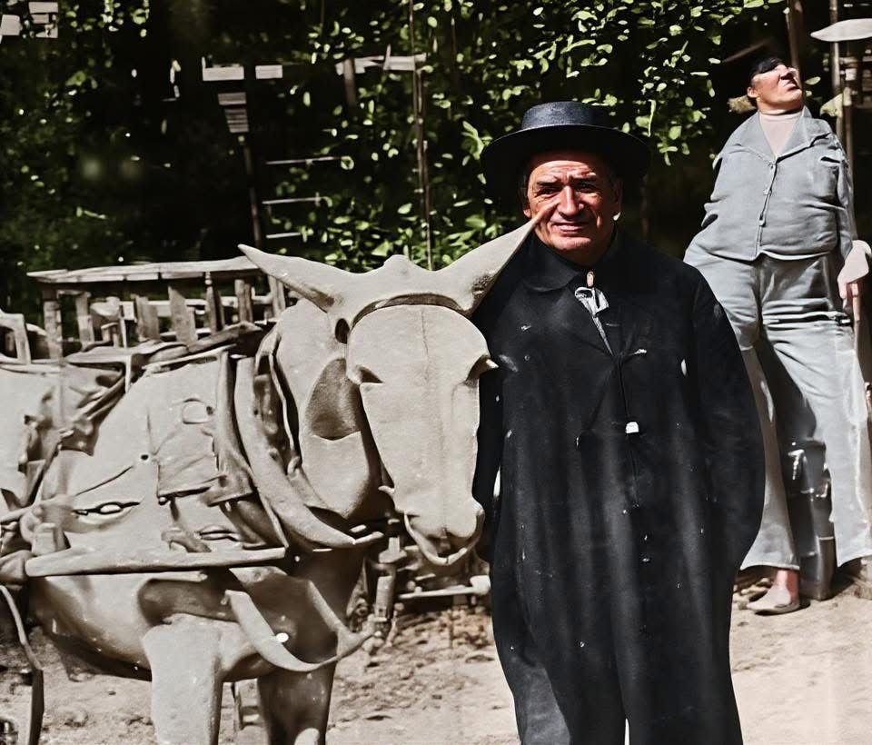

Brewster line · Fentress and Morgan Counties, Tennessee
Profile status: SUPPORTED
Quick Facts
Born
3 August 1823, Morgan County, Tennessee — probably the part that became Fentress County three months later SUPPORTED (the census ages agree on August 1823 — 1900: 76; 1910: 86 — but the day itself is contested: one compiled account and Find a Grave give 8 August, and no birth record exists; Tennessee did not register births in 1823)
Died
23 December 1911, Brewstertown, Morgan County, Tennessee FAMILY ACCOUNT (family tradition, bounded by his will, written in 1904 and proved on 24 June 1912; no state death record — the 1908–1912 Tennessee death index has no John Brewster)
Married
Rebecca "Beckie" Farr, about 1848–49 UNPROVED (no marriage record survives; family tradition says Clinton County, Kentucky, while one compiled account's summary says probably Morgan County, Tennessee — three logged-in FamilySearch searches found no record)
Second marriage
Elizabeth Trail Crabtree, after Rebecca's death and before 1900 UNPROVED (no marriage record; her maiden name is given as Trail by a family account and as Price by one compiled account; she is said to be buried at Old Barger Baptist Church, Jamestown)
Third marriage
Sophronia Elizabeth (Price) Howard, 1902 DOCUMENTED (Morgan County Marriages 1901–1906, p. 119: "John Brewster Sr and Elizabeth Howard"); she died in 1922 (Tennessee death certificate #451)
Occupation
Farmer; Free Will Baptist minister of the Stone Association DOCUMENTED (the association's 1879 minutes, read directly — see Life Story)
Military
No military service found (he was 38 when the Civil War began; no service or exemption record has been located)
Buried
Carpenter Cemetery — the old Nydeck Cemetery — near Robbins, Morgan County, Tennessee SUPPORTED (family tradition, his Find a Grave memorial, and the 2025 cemetery account; no stone or transcription has been independently confirmed)
John's link to James Gray × Phoebe is supported, not proved: no primary record names him as their son, and the 1850 Fentress household cited for James Gray does not include John. The link rests on family tradition reaching print through Lola Brewster Crabtree's 1981 letter and James Thomas Brewster's family history of about 1939, neither yet seen. Their tree profiles are linked.
Spouse
Rebecca "Beckie" Farr (1826–1892 or 1894), married about 1848–49 UNPROVED Elizabeth Trail Crabtree, married after Rebecca's death, before 1900 UNPROVED Sophronia Elizabeth (Price) Howard, married 1902 DOCUMENTED
Rebecca was his first wife. Whether his two later wives were two women or one woman (Price → Crabtree → Howard) is open in the research; the two-wife account is better supported. His second marriage is not linked on Geni, WikiTree, or Ancestry — no profile exists for Elizabeth Trail Crabtree.
All nine children are named in the family history and the research folder; James Thomas's death certificate names John and Rebecca as his parents. Wright's funeral appendix lists Sheron and Fairbee. Death years are disputed for several children: Phoebe's stone says 1857–1858 while the family history says she died at five or six; George's stone says 1865–1875 while the family history implies 1872–73, and he is absent from the 1870 census though born in 1865; Andrew died about 1868–69; Jesse died in 1869. The 2025 cemetery column gives Jesse 1869 — now agreed by Geni and Find a Grave — Andrew 1871, and George 1872 — one more voice, not a settler. Farsina's birth year wobbles between 1865 and 1867 across the censuses, and Find a Grave gives 1866. Jasper's death year is disputed: Find a Grave gives 1955, Geni gives 1956 — neither adopted; the card keeps "after 1950". No twins among the nine. A compiled account's claim that six of the children died of wartime disease is contradicted: only two died during or just after the war, Phoebe died before it, and none were infants.
Siblings
Nancy L. Brewster (1818–19) Jesse Brewster (1820 or 1822–1856; died by lightning with his son William) John W. Brewster (1823–1911) Catherine Davis (born 1824; married a Tally) Jeremiah F. Brewster (born 1825 or about 1839; died 1880) James Gray Brewster Jr. (1825–26) Rebeccah Brewster (1829–30) Susan E. Brewster (born 1834; died 1893) William E. Brewster (July 1836–1912) Frederick Miller Brewster (1839–40–1883) George Washington Brewster (1840–43–1879) Barbara E. Brewster (1845–46; twin of Ruthy A.) Ruthy A. Brewster (1845–46; twin of Barbara E.) Cindrella A. Brewster (1849–50) Adaline Brewster (1851–52) Susanah Brewster (1855–56; twin of Monroe G.) Monroe G. Brewster (1855–56; twin of Susanah) William W. Brewster (1858–59)
Eighteen children of James Gray Brewster Sr. × Phoebe Julia Cox, from the compiled family history and the 1860 census household. The placements of Catherine Davis, Jeremiah F., Susan E., and William E. are unproved, and Jeremiah's birth year is contradicted between the tree (1825) and the compiled account (about 1839). Two exclusions: a Jeremiah Brewster born 1815 in Kentucky is a different man from Jeremiah F., and "Rebecca Hagler" does not belong as a child of James × Phoebe. A compiled account's claim of "twenty-three children" is contradicted — eighteen are documented. The maternity of the three youngest (Susanah, Monroe G., William W.) is flagged open, Phoebe being about fifty-five when they were born. Twins in this family: Ruthy A. and Barbara E. (about 1845–46); Susanah and Monroe G. (about 1855–56).
3 August 1823 · age 0 Born, Morgan County, Tennessee — probably the part that became Fentress County three months later SUPPORTED (the day is contested — see Research Notes)
About 1848–49 · age 25 Married Rebecca Farr UNPROVED
1849–1867 · ages 25–44 Nine children born SUPPORTED
October 1860 · age 37 Bought 300 acres across the Clear Fork River, Morgan County SUPPORTED (Morgan Deeds Vol. S, pp. 514–516)
3 October 1879 · age 56 Preached the introductory sermon at Laurel Creek Church, Cumberland County; appointed a presbyter of the Stone Association DOCUMENTED
1881 · age 58 Assisted the Rev. A. B. Wright at Elijah Yorke's funeral, Loudonville DOCUMENTED
1892 or 1894 · age 69 or 71 Rebecca died; John widowed UNPROVED as to year
1902 · age 79 Married Sophronia Elizabeth (Price) Howard DOCUMENTED
1904 · age 81 Will written SUPPORTED
22 April 1910 · age 86 Enumerated at Brewstertown with his third wife Sophronia E., 65; married seven years, a third marriage for each; Sophronia: seven children born, six living DOCUMENTED
23 December 1911 · age 88 Died, Brewstertown, Morgan County FAMILY ACCOUNT
Buried Carpenter Cemetery — the old Nydeck Cemetery — near Robbins SUPPORTED
Life Story
John W. Brewster was born in August 1823 in Morgan County, Tennessee, probably in the part that became Fentress County three months later. He was the son of James Gray Brewster Sr. and Phoebe Julia Cox — a link carried as supported, not proved: no primary record names him as their son, and the claim rests on family tradition reaching print through a 1981 letter and his son James Thomas's family history of about 1939, neither yet seen. He grew up on the Clear Fork, where he farmed. In October 1860 he bought 300 acres across the Clear Fork River in Morgan County, and the settlement that grew around the farm became Brewstertown; he later sold 75 acres each to his sons James Thomas and Jasper Newton. The agricultural schedules trace the farm from one milk cow, two sheep, and a dozen pigs in 1860 to three oxen, 29 sheep, 60 pigs, and 200 bushels of Indian corn in 1880; in 1870 the farm produced 11 pounds of flax, one of only seven in the district growing it.
John was a Free Will Baptist minister, an elder of the Stone Association, and known locally as "old preacher Johnny Brewster." On Friday 3 October 1879, at Laurel Creek Church in Cumberland County, he preached the introductory sermon of the association's fourteenth anniversary meeting, from the fifteenth chapter of John — "I am the vine, ye are the branches." The meeting voted him a presbyter for the next associational year and appointed him, with others, to the Crooked Creek and Mount Pisgah churches — co-appointed to both, not sole pastor of either. In 1881 he assisted the Rev. A. B. Wright at Elijah Yorke's funeral at Loudonville, five miles from Jamestown; Wright preached, and John assisted. Rugby Sketches (1941) remembers him with his grey donkey "old Jude," though no digital copy of it has been located. A photograph shared by Geri Brewster in the Brewster reunion group shows him beside a horse or mule; its overlaid text calls him "Preacher Johnny Brewster. First Elder to live in Brewstertown" — the "first elder" claim is family lore, not carried as fact. The same scene survives as a colorized print from Find a Grave, shown in the gallery below.
About 1848–49 John married Rebecca Farr, though no marriage record survives. They raised nine children at Brewstertown, and buried six of them young: Phoebe, Sheron, Fairbee, Andrew, George, and Jesse. His son Thomas once canoed into the flooded Clear Fork and saved the Rev. A. B. Wright's horse, a rescue Wright wrote into his autobiography. Rebecca died in 1892 or 1894 — the year is contested and no death record settles it — and John married twice more, Elizabeth Trail Crabtree and then, in 1902, Sophronia Elizabeth (Price) Howard. He wrote his will in 1904, died on 23 December 1911 at Brewstertown, and his will was proved on 24 June 1912. He is buried at Carpenter Cemetery near Robbins.
Photo Gallery

John W. Brewster beside his mule, about 1890 — a colorized print from his Find a Grave memorial; the same scene the family shared in the Brewster reunion group
Sources and Evidence
Minutes of the Fourteenth Anniversary of the Stone Association … Laurel Creek Church, Cumberland County, Tenn. (Nashville: Marshall & Bruce, 1879), read directly: meeting Friday 3 October 1879; the introductory sermon preached by Elder John Brewster from John 15:5; presbyters appointed for the next associational year; "Crooked Creek — W. P. Brown and John Brewster" and "Mt. Pisgah — Joseph A. Moyers and John Brewster"; John presented as a delegate with a petitionary letter and named a messenger to the New Union Association DOCUMENTED
Rev. A. B. Wright, Autobiography (Cranston & Curts, 1896), read directly: pp. 119–120, Thomas's Clear Fork horse rescue; p. 199, Elijah Yorke's funeral, 1881 — "Rev. John Brewster, a Christian Baptist minister, was present, and assisted"; p. 443, the appendix funeral list contains "Sherrod Brewster" and "Pheriba E. Brewster" DOCUMENTED (spelling flag: the scan's rendering against the stones' "Sheron" and "Fairbea")
Morgan County Marriages 1901–1906, p. 119: "John Brewster Sr and Elizabeth Howard," 1902 DOCUMENTED
Tennessee death certificate #451, "Sephrona Elizabeth Brewester," died 1922 DOCUMENTED
Morgan County Probate Records, p. 246: John's will, written 1904, proved 24 June 1912 SUPPORTED (cited in the research folder; the will text itself is the top open pull — FamilySearch film 978845, image 200)
Donna Gough's footnoted 2022 study of this couple, read in full (two captures, 2022 and 2026) SUPPORTED (compiled research; her newer Farr page gives Elizabeth's maiden name as unknown, against her John page)
Ben Garrett, "Sacred Ground: Carpenter Cemetery," Independent Herald, 20 June 2025, read directly: "Rebecca Farr Brewster was buried at the cemetery in 1894, and John was buried there in 1911" SUPPORTED for the burials; the 1894 year for Rebecca is UNPROVED (a single modern statement, no stone or record cited)
Census trail and birth-years worksheet, read directly: 1900 — John 76, born August 1823; 1910 — John 86; 1860 and 1880 agree on Rebecca's 1826. A logged-in 1900 census read gives John 77, widowed, Morgan County, Tennessee — a one-year wobble against the worksheet's 76 SUPPORTED
1910 United States census, Morgan County, Tennessee, enumeration district 55, sheet 2B, dwelling 34, family 37, enumerated 22 April 1910: John Brewster, 86, married seven years, third marriage; Sophronia E. Brewster, 65, third marriage; Sophronia: seven children born, six living DOCUMENTED
Geni profiles, click-verified 4 November 2026: John, Rebecca, and their eight other children SUPPORTED
Find a Grave memorial 28431193: "Rev John Brewster," born 8 August 1823, Tennessee; died 23 December 1911, Morgan County; burial Carpenter Cemetery SUPPORTED (the 8 August day is the contested reading; the memorial was read live in this pass, and its two photographs — a portrait of John in old age and the mule photograph, about 1890 — were pulled in full and placed on this page)
Marriage about 1848–49: family tradition only (grandson Andy Marion Brewster, relayed by Wilma Crabtree Gibson); no record found; the free Clinton County, Kentucky marriage lists read in full do not cover 1848–49 UNPROVED
Lola Brewster Crabtree's 1981 letter and James Thomas Brewster's family history of about 1939 — neither yet seen; the parentage claim rests on them FAMILY ACCOUNT
Grades: DOCUMENTED an original record says it · SUPPORTED several records point to it · FAMILY ACCOUNT the family's own telling · UNPROVED a lead, not proved.
Research Notes and Open Questions
Birth day: 3 August (Gough) against 8 August (a compiled family account and Find a Grave); no primary record, and Tennessee did not register births in 1823. The page uses 3 August.
Parentage: John's link to James Gray Brewster Sr. × Phoebe Julia Cox is supported, not proved. Above them, Jeremiah to James Gray is probable but unproved, and Jeremiah's own father (Comfort against Ebenezer II) is unproved. "Susannah Millard" as James Gray's mother rests on a single retracted 1998 forum post and is not carried as John's grandmother.
Phoebe's birth year: Find a Grave gives 1800, Geni gives 1804 — neither adopted; the question belongs to her own pass.
Marriage: about 1848–49 is unproved — no record survives. Three logged-in FamilySearch searches of the "Kentucky, County Marriages, 1797–1954" index found no record; the marriage stays unproved.
Later wives: whether the two later wives were two women or one woman (Price → Crabtree → Howard) is open; the two-wife account is better supported. Elizabeth Trail Crabtree has no tree profile, and the second marriage is not linked on Geni, WikiTree, or Ancestry. Her maiden name is Trail by a family account, Price by one compiled account.
1910 census: read in full — enumeration district 55, sheet 2B, dwelling 34, family 37, enumerated 22 April 1910: John, 86, married seven years, third marriage; Sophronia E., 65, third marriage; Sophronia: seven children born, six living. Sophronia's third-marriage mark implies an earlier marriage before Howard — Howard was her name at the 1902 marriage record. Daughter Farsina's husband Hugh Berry lives two doors away on the same sheet.
Children's death years are disputed as noted on the Children card; Farsina's birth year wobbles between 1865 and 1867 across the censuses; Jasper's "Newton" middle name is questioned in the worksheet but unanswered; George is absent from the 1870 census though born in 1865.
Wright rescue year: James Thomas's page dates the horse rescue March 1874 (pp. 120–121); Wright's narrative places it in 1875 (pp. 119–120). Year and page range are open, to be settled by a page-image check.
Wright funeral-list spellings "Sherrod" and "Pheriba E." are an OCR-against-stone variant, not new name forms; the stones read "Sheron" and "Fairbea."
A Stone Association history notes PDF gives John born 6 December 1825 and buried in "Skanks Cemetery" — an unsourced compilation from old FamilyTreeMaker and RootsWeb user pages, unproved, not adopted.
Photographs: the hero is a portrait of John in old age, pulled from his Find a Grave memorial. The gallery shows him beside his mule, about 1890, in a colorized print from the same memorial — the same scene the family shared in Geri Brewster's 8 June 2026 Brewster Reunion group post, whose overlaid text is part of that shared image. The uncolorized print of the same scene is filed in the research folder. No stone photograph of John has been found; the children's marker photographs are filed in the research folder and are not placed here.
Open pulls: the will and probate (FamilySearch film 978845, image 200); the 1902 marriage register image (film 978841, image 309); the deeds (Morgan County Deed Book C-2 pp. 40–41; Fentress County Deed Book J pp. 387–389); the Farr pension files (a paid step — noted, not pursued).
James Thomas's family-history text of about 1939, transcribed by his daughter Lola, has not been located; it is the top pull for this pass.
Profile history: Created 5 November 2026 from the family couple profile and research notes.